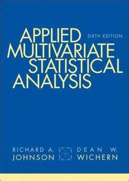
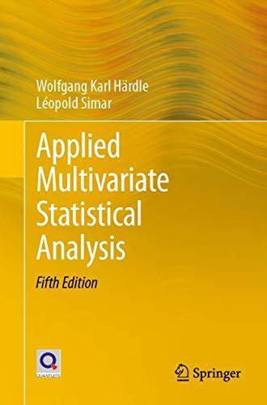

Análise Multivariada (Introdução)
Pedro Almeida
Apresentação do curso
Unidade I
- Revisão de matriz
- Aspectos da análise multivariada: Áreas de aplicação, estatística descritiva e distância euclidiana e estatística;
- Matrizes e vetores aleatórios: Conceitos, formas quadráticas e desigualdade de matrizes e maximização;
- Aspectos geométricos da amostra: A geometria da amostra, amostra aleatória, o valor esperado e matriz de covariância amostral; variância generalizada; média amostral, covariância e correlação como operações de matrizes; valores amostrais de combinações lineares de variáveis;
- Distribuição normal multivariada: A densidade normal multivariada e propriedades; amostragem de uma normal multivariada, os estimadores de MV, as distribuições amostrais do vetor médio e da matriz de covariância
- Distribuição de Wishart; distribuições amostrais a partir de grandes amostras; avaliações da suposição de normalidade marginal e bivariada, detecção de outliers e transformação de dados para aproximar da normalidade.
- Unidade II:
- Inferências sobre o vetor médio: Introdução, a plausibilidade de um vetor específico como valores para o vetor médio de uma normal;
- A estatística T2 de Hotelling
- Teste da razão de verossimilhanças
- Comparações de várias médias: MANOVA
Avaliação
Unidade 1:
- Seminários (individuais)
Unidade 2:
- Seminários (individuais)
Nota final:
Média dos seminários
Reposição : Prova teórica
Prova final: Prova teórica
Referências usadas no curso
[1] Richard A. JOHNSON & Dean W. WICHERN :

[2] W. K HARDLE & L. SIMAR:

Conceitos Matriciais
Definição Matriz
Definição : Uma matriz é, em geral, um arranjo retangular de elementos em linhas e colunas
Obs: Geralmente as matrizes são representadas por letras maiúsculas em negrito e será constituída de elementos pertencentes ao conjunto dos números reais.
Exemplo: São exemplos de matrizes:
\[ \boldsymbol A =\left(\begin{array}{ccc}1 & 2 & -1 \\2 & -3 & 0 \\-1 & 1 & 3\end{array}\right); \boldsymbol B =\left(\begin{array}{cc}1 & 2 \\5 & -3 \end{array}\right) \quad e \quad \boldsymbol C =\left(\begin{array}{cc}1 & 2 \\ -1 & 2 \\ -1 & 1 \end{array}\right) \]
Dimensão de uma matriz
Definição: Dimensão é um par ordenado de números naturais que descreve o número de linhas e o número de colunas de uma matriz.
Exemplo: As matrizes \(\boldsymbol{A}\), \(\boldsymbol B\) e \(\boldsymbol C\) citadas anteriormente com suas respectivas ordens são
\(\boldsymbol A_{3 \times 3}\) ou \(\boldsymbol A_{3\, 3}\), isto é, a matriz possui três linhas e três colunas
\(\boldsymbol B_{2 \times 2}\) ou \(\boldsymbol B_{2 \, 2}\), isto é, a matriz possui duas linhas e duas colunas
\(\boldsymbol C_{3 \times 2}\) ou \(\boldsymbol C_{3 \, 2}\), isto é, a matriz possui três linhas e duas colunas.
Forma Geral de uma matriz
Forma Geral: De modo geral, uma matriz \(\boldsymbol A\) com \(m\) linhas e \(n\) colunas é representada por:
\[ \boldsymbol A_{m \times n} =\left( \begin{array}{ccccc}a_{11} & a_{12} & a_{13} & \ldots & a_{1n} \\a_{21} & a_{22} & a_{23} & \ldots & a_{2n} \\\vdots & \vdots & \vdots & \ddots & \vdots \\a_{m1} & a_{m2} & a_{m3} & \cdots & a_{mn}\end{array}\right); \]
em que \(a_{ij}\) são os elementos da matriz sendo \(i = 1, \ldots, m\) o índice das linhas e \(j = 1, \ldots, n\) o índice que representa a coluna.
Tipos de Matrizes
Matriz Quadrada
Definição (Matriz quadrada): Se \(A_{mn}\) tem \(m=n\), então \(A_{mn}\) é uma matriz quadrada.
Exemplo:
\[ \boldsymbol A =\left(\begin{array}{ccc}1 & 2 & -1 \\2 & -3 & 0 \\-1 & 1 & 3\end{array}\right) \quad e \quad \boldsymbol B =\left(\begin{array}{cc}1 & 2 \\5 & -3 \end{array}\right). \]
Matriz Triangular
Definição: É uma matriz quadrada que tem nulos todos os elementos abaixo ou acima da diagonal principal. Isto é,
\[ B_{(n)}=\left( \begin{array}{rrrr}b_{11} & b_{12} & \cdots & b_{1 n} \\ 0 & b_{22} & \cdots & b_{2 n} \\ \vdots & \vdots & \ddots & \vdots \\ 0 & 0 & \cdots & b_{n n}\end{array}\right) \quad e \quad C_{(n)}=\left(\begin{array}{rrrr}c_{11} & 0 & \cdots & 0 \\ c_{21} & c_{22} & \cdots & 0 \\ \vdots & \vdots & \ddots & \vdots \\ c_{n 1} & c_{n 2} & \cdots & c_{n n}\end{array}\right) \]
Matriz Diagonal
A matriz diagonal \(D_{nn}\) é uma matriz diagonal se, e somente se, \(d_{ij} = 0\), para todo \(i \neq j\). Isto é,
\[ D_{nn} = \left( \begin{array}{rrrr}d_{11} & 0 & \cdots & 0 \\ 0 & d_{22} & \cdots & 0 \\ \vdots & \vdots & \ddots & \vdots \\ 0 & 0 & \cdots & d_{n n}\end{array}\right) \]
Matriz Identidade
Definição: É toda matriz diagonal tal que \(d_ii = 1\), para todo \(i\).
\[ I_{(n)}=\left(\begin{array}{cccc}1 & 0 & \cdots & 0 \\ 0 & 1 & \cdots & 0 \\ \vdots & \vdots & \ddots & \vdots \\ 0 & 0 & \cdots & 1\end{array}\right)=\operatorname{diag}\{1,1, \cdots, 1\}. \]
Matriz Simétrica
Definição: Se uma matriz quadrada \(A_{nn} = a_{ij}\) tem \(a_{ij} = a_{ji}\)
\[ A' = A^{\top} = (a_{ij}). \]
Exemplo: A matriz \(\boldsymbol{A}\), dada a seguer, \(E\) simétrica,
\[ A=\left(\begin{array}{rrr} 5 & 2 & 3 \\ 2 & 9 & -1 \\ 3 & -1 & 4 \end{array}\right) \] Pois, \(a_{12}=a_{21}=2, a_{13}=a_{31}=3\) e \(a_{23}=a_{32}=-1\).
Matriz Transposta
Definição: Dada uma matriz \(A_{mn} = a_{ij}\), sua transposta, denotada por \(A'\) ou \(A^{\top}\), é dada por:
\[ A' = A^{\top} = (a_{ji}). \]
Exemplo: Seja
\[ A_{23} = \left(\begin{array}{rrr} 5 & 10 & 3 \\ 1 & 5 & -1 \\ \end{array}\right) \]
Encontre a matriz transposta \(A^{\top}\).
Vetor
Se uma matriz \(A_{mm}\) é tal que \(m=1\) ou \(n=1\), então, \(A_{m1}\) é um vetor coluna e \(A_{1n}\) é um vetor linha.
Introdução a análise multivariada
A necessidade de entender as relações entre muitas variáveis torna a análise multivariada um assunto inerentemente difícil;
Quando avaliamos um vetor de variáveis aleatórias, adicionamos mais complexidade matemática aos modelos em comparação com a abordagem univariada;
Nosso objetivo é apresentar várias técnicas multivariadas úteis de maneira clara, fazendo uso intenso de exemplos aplicados e um mínimo de matemática.
Principais objetivos da Análise multivariada
- Redução de dados ou simplificação estrutural: O fenômeno que está sendo estudado é representado da forma mais simples possível, sem sacrificar informações valiosas. Espera-se que isso facilite a interpretação.
- Ordenação e agrupamento. Grupos de objetos ou variáveis “semelhantes” são criados com base nas características medidas. Alternativamente, podem ser necessárias regras para classificar objetos em grupos bem definidos.
- Investigação da dependência entre variáveis. A natureza das relações entre as variáveis é de interesse. Todas as variáveis são mutuamente independentes ou uma ou mais variáveis dependem das outras? Em caso afirmativo, como?
- Previsão. As relações entre as variáveis devem ser determinadas com o objetivo de prever os valores de uma ou mais variáveis com base nas observações das outras variáveis.
- Construção e teste de hipóteses. Hipóteses estatísticas específicas, formuladas em função dos parâmetros de populações multivariadas, são testadas. Isso pode ser feito para validar suposições ou para reforçar convicções anteriores.
Organização dos dados
Ao longo da disciplina, vamos nos preocupar em analisar dados com diversas variáveis ou características.
Os dados devem frequentemente ser organizados e exibidos de várias maneiras.
Por exemplo, gráficos e arranjos tabulares são importantes na análise de dados.
Números resumidos, que retratam quantitativamente certas características dos dados, também são necessários para qualquer descrição (Média, variância, …).
Dados multivariados
- Dados multivariados surgem sempre que um investigador, buscando entender um fenômeno social ou físico, seleciona um número \(p \geq 1\) de variáveis.
- Os valores dessas variáveis são todos registrados para cada item distinto, indivíduo ou unidade experimental.
Notação matriz de dados
Usaremos a notação \(x_{j k}\) para indicar o valor particular da \(k\) a variável que é observada no \(j\) o item, ou tentativa. Em que, \(x_{j k}=\) medição da variável \(k\)-ésima no item \(j\)-ésimo. Consequentemente, as \(n\) medições nas \(p\) variáveis podem ser exibidas da seguinte forma: \(\begin{array}{ccccccc} & \text { Variável 1 } & \text { Variável 2 } & \ldots & \text { Variável } k & \ldots & \text { Variável } p \\ \text { Item } 1: & x_{11} & x_{12} & \ldots & x_{1 k} & \ldots & x_{1 p} \\ \text { Item } 2: & x_{21} & x_{22} & \ldots & x_{2 k} & \ldots & x_{2 p} \\ \vdots & \vdots & \vdots & & \vdots & & \vdots \\ \text { Item } j: & x_{j 1} & x_{j 2} & \cdots & x_{j k} & \ldots & x_{j p} \\ \vdots & \vdots & \vdots & & \vdots & & \vdots \\ \text { Item } n: & x_{n 1} & x_{n 2} & \cdots & x_{n k} & \ldots & x_{n p}\end{array}\)
Ou podemos exibir esses dados como uma matriz retangular, chamada \(\mathbf{X}\), de \(n\) linhas e \(p\) colunas:
\[ \mathbf{X}=\left[\begin{array}{cccccc} x_{11} & x_{12} & \cdots & x_{1 k} & \cdots & x_{1p} \\ x_{21} & x_{22} & \cdots & x_{2 k} & \cdots & x_{2 p} \\ \vdots & \vdots & & \vdots & & \vdots \\ x_{j 1} & x_{j 2} & \cdots & x_{j k} & \cdots & x_{j p} \\ \vdots & \vdots & & \vdots & & \vdots \\ x_{n 1} & x_{n 2} & \cdots & x_{n k} & \cdots & x_{n p} \end{array}\right] \]
A matriz \(\mathbf{X}\), então, contém os dados que consistem em todas as observações de todas as variáveis.
Exemplo (uma matriz de dados)
Uma seleção de quatro recibos de uma livraria universitária foi obtida para investigar a natureza das vendas de livros. Cada recibo fornecia, entre outras coisas, o número de livros vendidos e o valor total de cada venda. Deixe a primeira variável ser o total de vendas em dólares e a segunda variável ser o número de livros vendidos. Então podemos considerar os números correspondentes nas receitas como quatro medições em duas variáveis.
Suponha que os dados, em forma de tabela, sejam
\[ \begin{array}{rrrrr}\text { Variável } 1 \text { (vendas em dólares): } & 42 & 52 & 48 & 58 \\ \text { Variável 2 (número de livros): } & 4 & 5 & 4 & 3\end{array} \]
Usando a notação que acabamos de introduzir, temos
\[ \begin{array}{llll} x_{11}=42 & x_{21}=52 & x_{31}=48 & x_{41}=58 \\ x_{12}=4 & x_{22}=5 & x_{32}=4 & x_{42}=3 \end{array} \]
e a matriz de dados \(\mathbf{X}\) é
\[ \mathbf{X}=\left[\begin{array}{cc} 42 & 4 \\ 52 & 5 \\ 48 & 4 \\ 58 & 3 \end{array}\right]. \]
Estatística Descritiva
Um grande conjunto de dados é volumoso e sua própria massa de dados representa um sério obstáculo para qualquer tentativa de extrair visualmente informações pertinentes.
Muitas das informações contidas nos dados podem ser avaliadas por meio do cálculo de certos números resumidos, conhecidos como estatísticas descritivas.
Por exemplo, a média aritmética, ou média amostral, é uma estatística descritiva que fornece uma medida de localização, ou seja, um “valor central” para um conjunto de números. E a média dos quadrados das distâncias de todos os números da média fornece uma medida da dispersão, ou variação, dos números.
Devemos nos basear mais fortemente em estatísticas descritivas que medem localização, variação e associação linear. Seguem as definições formais dessas quantidades.
Média aritmétrica
Sejam \(x_{11}, x_{21}, \ldots, x_{n 1}\) os \(n\) valores da \(k\)-ésima variável. Então a média aritmética amostral é definida como:
\[ \bar{x}_k=\frac{1}{n} \sum_{j=1}^n x_{j k} \quad k=1,2, \ldots, p. \]
Variância amostral
Uma medida de dispersão é fornecida pela variância da amostra, definida para a \(k\)-ésima variável como
\[ s_k^2=\frac{1}{n-1} \sum_{j=1}^n\left(x_{j k}-\bar{x}_k\right)^2 \quad k=1,2, \ldots , p \]
em que \(n\) é o tamanho da amostra e \(p\) é a quantidade de variáveis.
Covariância para duas variáveis
Considere \(n\) pares em cada uma das variáveis 1 e 2:
\[ \left[\begin{array}{l} x_{11} \\ x_{12} \end{array}\right],\left[\begin{array}{l} x_{21} \\ x_{22} \end{array}\right], \ldots,\left[\begin{array}{l} x_{n 1} \\ x_{n 2} \end{array}\right] \]
Ou seja, \(x_{j 1}\) e \(x_{j 2}\) são observados no \(j\) o item experimental \((j=1,2, \ldots, n)\). Uma medida de associação linear entre as medidas das variáveis 1 e 2 é fornecida pela covariância da amostra
\[ s_{12}=\frac{1}{n} \sum_{j=1}^n\left(x_{j 1}-\bar{x}_1\right)\left(x_{j 2}-\bar{x}_2\right) \]
Covariância para o caso geral …
A covariância Amostral é
\[ s_{i k}=\frac{1}{n} \sum_{j=1}^n\left(x_{j i}-\bar{x}_i\right)\left(x_{j k}-\bar{x}_k\right) \quad i=1,2, \ldots, p, \quad k=1,2, \ldots, p \]
que mede a associação entre as \(i\)-ésimas e \(k\)-ésimas variáveis .
Observamos que:
A covariância se reduz à variação da amostra quando \(i = k\).
\(s_{i k} = s_{k i}\) para todos \(i\) e \(k\).
Coeficiente de correlação
O coeficiente de correlação da amostra mede a associação linear entre duas variáveis. O coeficiente de correlação de amostra para as \(i\)-ésimas e \(K\)-ésimas variáveis são dadas por:
\[ r_{i k}=\frac{s_{i k}}{\sqrt{s_{i i}} \sqrt{s_{k k}}}=\frac{\sum_{j=1}^n\left(x_{j i}-\bar{x}_i\right)\left(x_{j k}-\bar{x}_k\right)}{\sqrt{\sum_{j=1}^n\left(x_{j i}-\bar{x}_i\right)^2} \sqrt{\sum_{j=1}^n\left(x_{j k}-\bar{x}_k\right)^2}} \]
por \(i = 1,2, \ldots, p\) e \(k = 1,2, \ldots, p\). Nota \(r_{i k} = r_{k i}\) para todo \(i\) e \(k\).
Coeficiente de correlação
O coeficiente de correlação de amostra \(r_{i k}\) também pode ser visto como uma covariância de amostra. Suponha que os valores originais \(x_{j i}\) e \(x_{j k}\) sejam substituídos por valores padronizados \(\left (x_{j i}-\bar{x}_i \right) / \sqrt{s_{i i}}\) e \(\left(x_{j k}-\bar{x}_k \right) / \sqrt{s_{k k}}\).
Os valores padronizados são comensuráveis porque os dois conjuntos são centralizados em zero e expressos em unidades de desvio padrão.
O coeficiente de correlação da amostra é apenas a covariância da amostra das observações padronizadas. Embora os sinais da correlação da amostra e da covariância da amostra sejam iguais, a correlação é normalmente mais fácil de interpretar porque sua magnitude é limitada.
Propriedades da correlação
O valor de \(r\) deve estar entre \(-1\) e \(+1\) inclusive.
Aqui \(r\) mede a força da associação linear. Se \(r = 0\), isso implica uma falta de associação linear entre os componentes.
O sinal de \(r\) indica a direção da associação: \(r < 0\) implica uma tendência para que um valor no par seja maior que a média quando o outro é menor que a média; e \(r > 0\) implica uma tendência para que um valor do par seja grande quando o outro valor é grande e também para que ambos os valores sejam pequenos juntos.
O valor de \(r_{i k}\) permanece inalterado se as medições da \(i\)-ésima variável forem alteradas para \(y_{j i} = a x_{j i}+b, j = 1,2, \ldots, n\), e os valores da variável \(k\) são alterados para \(y_{j k} = c x_{j k}+d, j = 1,2, \ldots, n\), desde que as constantes \(a\) e \(c\) tem o mesmo sinal.
Observações importantes das medidas de covariância e correlação
As quantidades \(s_{i k}\) e \(r_{i k}\), em geral, não transmitem tudo o que há para saber sobre a associação entre duas variáveis. Associações não lineares podem existir que não são reveladas por essas estatísticas descritivas.
Covariância e correlação fornecem medidas de associação linear.
Seus valores são menos informativos para outros tipos de associação (não linear).
Podem ser afetadas pela presença de Outliers
Soma de quadrados
A soma dos quadrados dos desvios da média e da soma dos desvios cruzados são frequentemente de interesse. Essas quantidades são
\[ w_{k k} = \sum_{j = 1}^n \left(x_{j k}-\bar{x}_k \right)^2 \quad k = 1,2, \ldots, p \]
e
\[ w_{i k} = \sum_{j = 1}^n \left(x_{j i}-\bar{x}_i \right) \left (x_{j k}-\bar{x}_k \right) \quad i = 1,2, \ldots, p, \quad k = 1,2, \ldots, p \]
Resumo das medidas estatísticas em arrays
- Médias amostrais:
\[ \overline{\mathbf{x}}=\left[\begin{array}{c} \bar{x}_1 \\ \bar{x}_2 \\ \vdots \\ \bar{x}_p \end{array}\right] \]
- variâncias e covariâncias amostrais:
\[ \begin{aligned} \mathbf{S}_n & =\left[\begin{array}{cccc} s_{11} & s_{12} & \cdots & s_{1 p} \\ s_{21} & s_{22} & \cdots & s_{2 p} \\ \vdots & \vdots & \ddots & \vdots \\ s_{p 1} & s_{p 2} & \cdots & s_{p p} \end{array}\right] \end{aligned} \]
- Correlações amostrais:
\[ \begin{aligned} \mathbf{R} & =\left[\begin{array}{cccc} 1 & r_{12} & \cdots & r_{1 p} \\ r_{21} & 1 & \cdots & r_{2 p} \\ \vdots & \vdots & \ddots & \vdots \\ r_{p 1} & r_{p 2} & \cdots & 1 \end{array}\right] \end{aligned} \]
Exercícios
- Considere os seguintes pares de dados \(\left(x_1, x_2\right)\):
\[ \begin{align} x_1 & & 3 & 4 & 2 & 6 & 8 & 2 & 5 \\ \hline x_2 & & 5 & 5.5 & 4 & 7 & 10 & 5 & 7.5 \end{align} \]
Calcule as médias amostrais \(\bar{x}_1\) e \(\bar{x}_2\), as variâncias amostrais \(s_{11}\) e \(s_{22}\), e a covariancia \(s_{12}\).
- Considere os seguintes valores para as variáveis \(x_1, x_2\) e \(x_3\) :
\[ \begin{align} x_1 & & 9 & 2 & 6 & 5 & 8 \\ \hline x_2 & & 12 & 8 & 6 & 4 & 10 \\ \hline x_3 & & 3 & 4 & 0 & 2 & 1 \end{align} \]
Encontre as arrays \(\overline{\mathbf{x}}\) (média amostral), \(\mathbf{S}_n\) (covariância) e \(\mathbf{R}\) (correlação).